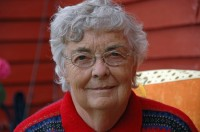

Lars Agnar Øvereng
M, #677, f. 15 februar 1929, d. 4 januar 2013
Foreldre
Familie: Dagny Pernille Bach (f. 12 november 1935)
| Sønn | Bjørn Arild Øvereng+ (f. 18 desember 1963) |
Biografi
Lars Agnar Øvereng ble født den 15 februar 1929 på/i Vikna, Nord-Trøndelag. Han giftet seg med Dagny Pernille Bach. Han døde den 4 januar 2013 på/i Namsos sykeheim, Namsos, Nord-Trøndelag. Han ble gravlagt den 11 januar 2013 på/i Klinga kirkegård, Namsos, Nord-Trøndelag.
| Sist redigert |
8 januar 2013 00:00:00 |
Peder Kornelius Riise
M, #679, f. 24 september 1932, d. 25 august 2008
Foreldre
Familie: Ingeborg Vågsberg (f. 24 januar 1929, d. 21 oktober 1991)
| Sønn | Svein Kåre Riise+ (f. 19 august 1955) |
| Datter | Marita Riise+ (f. 5 februar 1964) |
Biografi
Peder Kornelius Riise ble født den 24 september 1932 på/i Nærøy, Nord-Trøndelag. Han giftet seg med
Ingeborg Vågsberg. Han døde den 25 august 2008 på/i Sykehuset Namsos, Namsos, Nord-Trøndelag. Han ble gravlagt den 29 august 2008 på/i Lundring kirke, Nærøy, Nord-Trøndelag
+.
Peder Kornelius Riise eide mellom 1958 og 1963 Flosanden 15/5, Lundring, Nærøy, Nord-Trøndelag.
| Sist redigert |
8 september 2010 00:00:00 |
Ingeborg Vågsberg
K, #680, f. 24 januar 1929, d. 21 oktober 1991
Familie: Peder Kornelius Riise (f. 24 september 1932, d. 25 august 2008)
| Sønn | Svein Kåre Riise+ (f. 19 august 1955) |
| Datter | Marita Riise+ (f. 5 februar 1964) |
Biografi
Ingeborg Vågsberg ble født den 24 januar 1929 på/i Måløy, Steigen, Nordland. Hun giftet seg med
Peder Kornelius Riise. Hun døde den 21 oktober 1991 på/i Nærøy, Nord-Trøndelag. Hun ble gravlagt den 26 oktober 1991 på/i Lundring kirkegård, Nærøy, Nord-Trøndelag.
Ingeborg Vågsberg was also known as Ingeborg Riise.
| Sist redigert |
8 september 2010 00:00:00 |
Else Margrete Løe
K, #682, f. 28 juni 1934, d. 20 august 2024
Foreldre
Familie: Knut Ingemar Kristiansen (f. 15 juli 1932)
| Datter | Helen Elisabeth Kristiansen+ (f. 20 desember 1951) |
| Sønn | Kjell Einar Kristiansen+ (f. 22 august 1955) |
| Sønn | Arne Morten Kristiansen+ (f. 16 desember 1960) |
| Datter | Siw Iren Kristiansen+ (f. 1 januar 1967) |
| Sønn | Bjørnar Kristiansen (f. 8 desember 1975) |

Else Kristiansen
Biografi
Else Margrete Løe ble født den 28 juni 1934 på/i Sparbu, Steinkjer, Nord-Trøndelag. Hun giftet seg med Knut Ingemar Kristiansen. Hun døde den 20 august 2024 på/i Nærøysund, Trøndelag. Hun ble gravlagt den 29 august 2024 på/i Kolvereid kirkegård, Nærøysund, Trøndelag.
Else Margrete Løe was also known as Else Margrete Kristiansen.
| Sist redigert |
27 august 2024 00:45:21 |
| Slektskap | 7-menning 1 gang forskjøvet til Lovise Julie Eggan |
Audun Jarle Johnsen
M, #683, f. 30 mars 1935, d. 21 oktober 1991
Foreldre
Familie: Edith Kathrine Nygård (f. 7 juli 1940, d. 10 mars 2025)
| Datter | Linda Anita Johnsen+ (f. 24 juli 1963) |
| Sønn | Jon Arne Johnsen (f. 21 april 1966) |
| Datter | Ragnhild Elin Johnsen (f. 29 oktober 1968) |
| Datter | Kari-Anne Johnsen (f. 3 februar 1975) |
Biografi
Audun Jarle Johnsen ble født den 30 mars 1935 på/i Nærøy, Nord-Trøndelag. Han giftet seg med
Edith Kathrine Nygård. Han døde den 21 oktober 1991 på/i Nærøy, Nord-Trøndelag. Han ble gravlagt den 25 oktober 1991 på/i Steine gravsted, Nærøy, Nord-Trøndelag.
Audun Jarle Johnsen eide Austval 27/20, Lauga, Nærøy, Nord-Trøndelag.
| Sist redigert |
8 september 2010 00:00:00 |
| Slektskap | 5-menning 1 gang forskjøvet til Håkon Wahl |
Edith Kathrine Nygård
K, #684, f. 7 juli 1940, d. 10 mars 2025
Foreldre
Familie: Audun Jarle Johnsen (f. 30 mars 1935, d. 21 oktober 1991)
| Datter | Linda Anita Johnsen+ (f. 24 juli 1963) |
| Sønn | Jon Arne Johnsen (f. 21 april 1966) |
| Datter | Ragnhild Elin Johnsen (f. 29 oktober 1968) |
| Datter | Kari-Anne Johnsen (f. 3 februar 1975) |
Biografi
Edith Kathrine Nygård ble født den 7 juli 1940 på/i Lundsenget; Gravvik, Nærøy, Nord-Trøndelag. Hun giftet seg med
Audun Jarle Johnsen. Hun døde den 10 mars 2025 på/i Nærøy bo- og behandlingssenter, Kolvereid, Nærøy, Nord-Trøndelag.
Edith Kathrine Nygård was also known as Edith Kathrine Johnsen. Det var urneseremoni Steine gravsted, Nærøysund, Trøndelag.
| Sist redigert |
13 mars 2025 23:59:32 |
| Slektskap | 5-menning 2 ganger forskjøvet til Håkon Wahl |
Benjamin Ryan
M, #685, f. 6 juli 1928, d. 26 september 2020
Familie: Margot Pauline Sandøy (f. 2 september 1927, d. 31 august 2014)
| Datter | Toril Ryan+ (f. 14 april 1953) |
| Datter | Bjørg Margrethe Ryan+ (f. 1 oktober 1954) |
| Sønn | Sverre Ryan (f. omtrent 1957) |
| Datter | Mette Katrine Ryan+ (f. 14 mai 1965) |
Biografi
Benjamin Ryan ble født den 6 juli 1928 på/i Kåfjord, Alta, Finnmark. Han giftet seg med
Margot Pauline Sandøy på/i Korsfjord, Alta, Finnmark. Han døde den 26 september 2020 på/i Levanger, Nord-Trøndelag. Han ble gravlagt den 2 oktober 2020 på/i Levanger Frikirke, Levanger, Nord-Trøndelag.
Benjamin Ryan bodde på/i Levanger, Nord-Trøndelag.
| Sist redigert |
25 oktober 2020 00:00:00 |
Margot Pauline Sandøy
K, #686, f. 2 september 1927, d. 31 august 2014
Foreldre
Familie: Benjamin Ryan (f. 6 juli 1928, d. 26 september 2020)
| Datter | Toril Ryan+ (f. 14 april 1953) |
| Datter | Bjørg Margrethe Ryan+ (f. 1 oktober 1954) |
| Sønn | Sverre Ryan (f. omtrent 1957) |
| Datter | Mette Katrine Ryan+ (f. 14 mai 1965) |
Biografi
Margot Pauline Sandøy ble født den 2 september 1927 på/i Træna, Nordland. Hun giftet seg med
Benjamin Ryan på/i Korsfjord, Alta, Finnmark. Hun døde den 31 august 2014 på/i Levanger, Nord-Trøndelag. Hun ble gravlagt på/i Levanger kirkegård, Levanger, Nord-Trøndelag.
Margot Pauline Sandøy was also known as Margot Pauline Ryan.
| Sist redigert |
25 oktober 2020 00:00:00 |
| Slektskap | 6-menning 1 gang forskjøvet til Håkon Wahl |
Ekoff Arvid Laugen
M, #687, f. 11 april 1905, d. 11 mars 1980
Foreldre
Biografi
Ekoff Arvid Laugen ble født den 11 april 1905 på/i Lauga, Nærøy, Nord-Trøndelag. Han giftet seg med
Tora Finnestrand den 23 juni 1941 på/i Kolvereid kirke, Kolvereid, Nord-Trøndelag. Han døde den 11 mars 1980 på/i Nærøy, Nord-Trøndelag. Han ble gravlagt den 18 mars 1980 på/i Steine gravsted, Nærøy, Nord-Trøndelag.
Ekoff Arvid Laugen ble døpt den 2 juli 1905 på/i Lundring kirke, Nærøy, Nord-Trøndelag
+. Han ble konfirmert den 5 september 1920 på/i Lundring kirke, Nærøy, Nord-Trøndelag
+. Han kjøpte i 1941 Bakkan 27/13, Lauga, Nærøy, Nord-Trøndelag.
| Sist redigert |
10 januar 2022 00:00:00 |
Tora Finnestrand
K, #688, f. 26 oktober 1913, d. 15 november 1984
Foreldre
Biografi
Tora Finnestrand ble født den 26 oktober 1913 på/i Lillestrand, Nærøy, Nord-Trøndelag. Hun giftet seg med
Ekoff Arvid Laugen den 23 juni 1941 på/i Kolvereid kirke, Kolvereid, Nord-Trøndelag. Hun døde den 15 november 1984 på/i Nærøy, Nord-Trøndelag. Hun ble gravlagt den 22 november 1984 på/i Steine gravsted, Nærøy, Nord-Trøndelag.
Tora Finnestrand was also known as Tora Laugen. Hun ble døpt den 25 januar 1914 på/i Kolvereid kirke, Kolvereid, Nord-Trøndelag. Hun ble konfirmert den 1 juli 1928 på/i Kolvereid kirke, Kolvereid, Nord-Trøndelag.
| Sist redigert |
10 januar 2022 00:00:00 |
| Slektskap | 8-menning 1 gang forskjøvet til Håkon Wahl |
Paul Olsen Holand
M, #692, f. 17 april 1915, d. 21 mars 1991
Foreldre
| Datter | Bjørg Sofie Holand+ (f. 6 februar 1949) |
| Sønn | Kjell Bjørnar Holand+ (f. 30 mai 1961) |
Biografi
Paul Olsen Holand ble født den 17 april 1915 på/i Vefsn, Nordland. Han giftet seg med
Elsa Karlsdatter Westrum i 1948. Han døde den 21 mars 1991 på/i Foldereid, Nærøy, Nord-Trøndelag. Han ble gravlagt den 27 mars 1991 på/i Foldereid kirkegård, Nærøy, Nord-Trøndelag.
| Sist redigert |
5 august 2023 23:50:38 |
Elsa Karlsdatter Westrum
K, #693, f. 2 juni 1917, d. 29 august 1982
Foreldre
Familie: Paul Olsen Holand (f. 17 april 1915, d. 21 mars 1991)
| Datter | Bjørg Sofie Holand+ (f. 6 februar 1949) |
| Sønn | Kjell Bjørnar Holand+ (f. 30 mai 1961) |
Biografi
Elsa Karlsdatter Westrum ble født den 2 juni 1917 på/i Trondheim, Sør-Trøndelag. Hun giftet seg med
Paul Olsen Holand i 1948. Hun døde den 29 august 1982 på/i Foldereid, Nærøy, Nord-Trøndelag. Hun ble gravlagt den 3 september 1982 på/i Foldereid kirkegård, Nærøy, Nord-Trøndelag.
Elsa Karlsdatter Westrum was also known as Elsa Holand Westrum.
| Sist redigert |
5 august 2023 23:41:20 |
Marius Strandberg
M, #697, f. 22 februar 1955, d. 14 desember 2011
Foreldre
Familie: Liv Kristin Wahl (f. 21 august 1960)
| Sønn | Stein Henrik Strandberg+ (f. 6 juni 1990) |
Biografi
Marius Strandberg ble født den 22 februar 1955 på/i Oslo. Han døde den 14 desember 2011 på/i Hønefoss sykehus, Hønefoss, Ringerike, Buskerud. Han ble gravlagt den 22 desember 2011.
Marius Strandberg og Liv Kristin Wahl gikk fra hverandre.
| Sist redigert |
23 desember 2011 00:00:00 |
{kind=link}